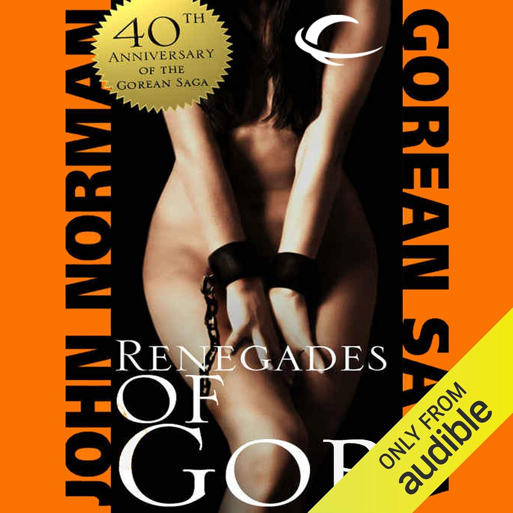
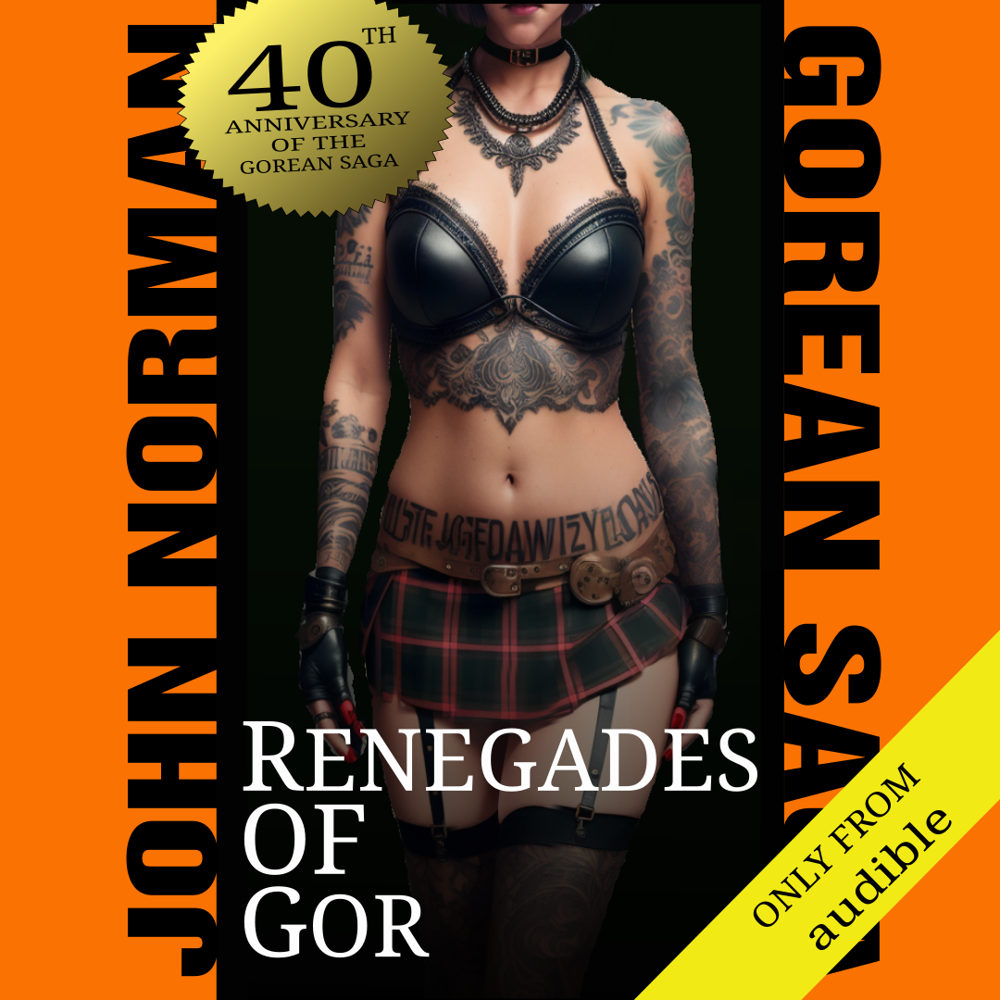
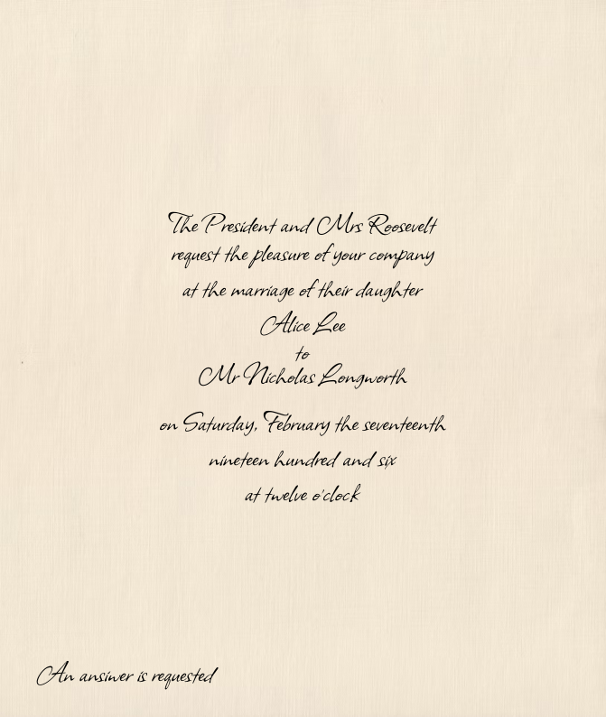
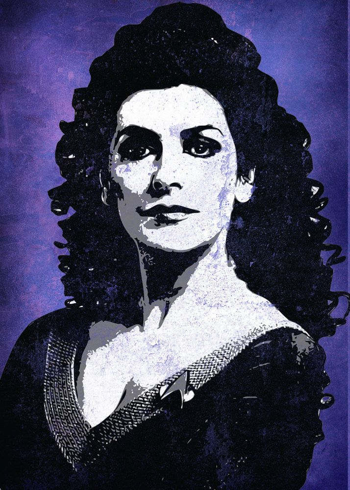
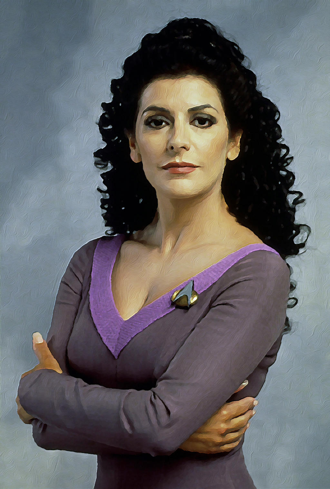
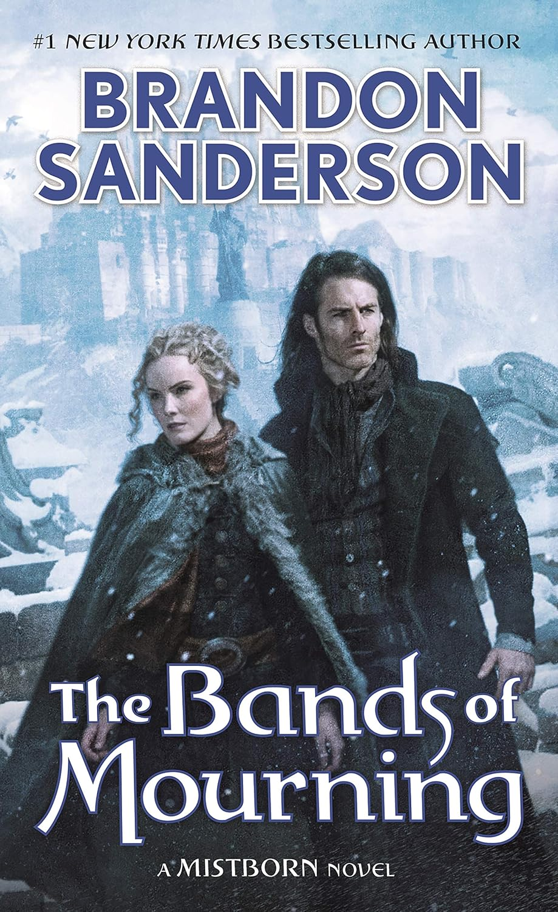
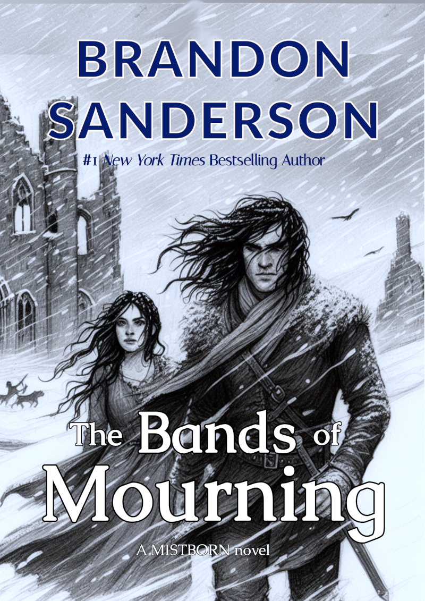
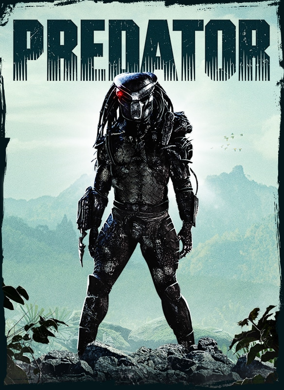
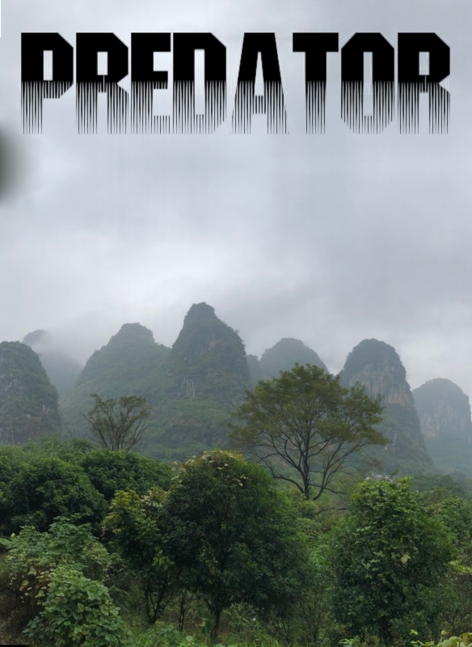

Remake Gallery
Learning through reproduction


Mona Lisa Study
Following Da Vinci's brushstrokes through X-ray analysis
2025-10-04


Renegades of Gor
One of the old sex and sorcery books that has had many releases since 1966, this is the most recent update to the cover art for an audible release.
2025-10-03

Presidential wedding invitation
Wedding invitations follow a classic style. Typography and layout are key.
2025-09-30


Deanna Troi poster art
Back in the early 2000, a variety of digital art derived from the character Deanna Troi, portrayed by Marina Sirtis, appeared on sites like etsy and other digital art sites.
2022-03-27


Bands of Mourning
The Bands of Mourning is a book in the mistborn series of books by Brandon Sanderson.
2022-01-02


Predator movie posters
Following Da Vinci's brushstrokes through X-ray analysis
2020-10-28
Arsenal Football club logo
The arsenal football club logo is a nice simple design, and best suited to being recreated in a vector format. Therefore I decided to use the gimp to recreate it instead.
2020-10-22